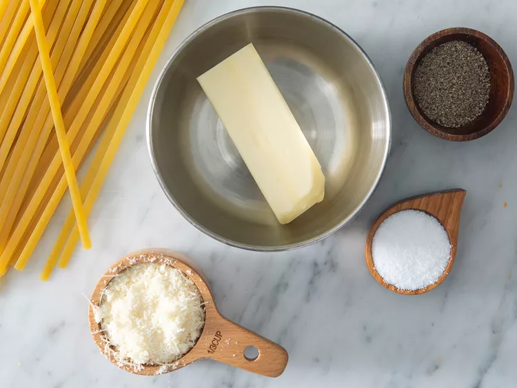

Prep Time:
5 mins
Cook Time:
15 mins
Total Time:
20 mins
Servings:
8
The recipe for butter noodles is adapted to the right amount of butter.
Once you've finished the recipe, you'll be satisfied. Give it a try! And see for yourself!
Believe it or not, you can make this incredibly simple dish with just four ingredients
Boil the fettuccine in lightly salted water until it's tender, yet still firm.
Drain the pasta in a colander,
then return it to the pot. Mix butter, cheese,
salt, and pepper into the cooked noodles until all the
ingredients are evenly combined.
Use 4 tablespoons of butter if you prefer less saucy noodles.
The noodles are incredibly beautiful, as you can use them as a side dish or as a starter.
Explore theirs entire collection of Main Dish Recipes.
If you're planning to serve the buttered noodles as a main dish, try pairing it with one of these light sides:
Store your leftover buttered noodles in an airtight container in the fridge for up
to five days. Reheat in the microwave or on the stove.
Step 1
Gather all ingredients.
Step 2
Fill a large pot with lightly salted water and bring to a rolling boil.
Step 3
Stir in fettuccine, bring back to a boil, and cook pasta over medium heat until tender yet firm to the bite, 8 to 10 minutes.
Step 4
Drain and return pasta to pot. Mix butter, Parmesan cheese, salt, and pepper into pasta until evenly combined.
Step 5
Serve hot and enjoy!
Nutrition Facts (per serving)
294
Calories
11g
Fat
41g
Carbs
9g
Protein